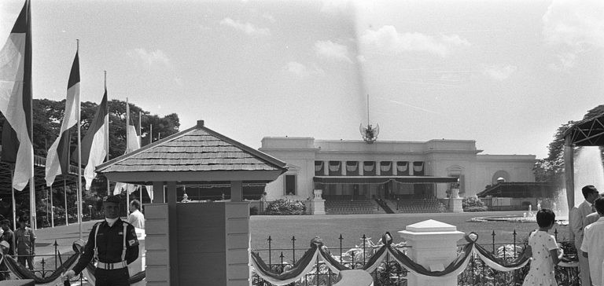

Sejarah Jakarta
Jakarta, ibu kota Indonesia, adalah salah satu kota terbesar dan paling bersejarah di Asia
Tenggara. Sejarah Jakarta dimulai pada awal abad ke-4 Masehi, ketika kota ini dikenal sebagai
Sunda Kelapa, sebuah pelabuhan penting di kerajaan Sunda. Pada tahun 1527, kota ini direbut oleh
pasukan Kesultanan Demak dan berganti nama menjadi Jayakarta. Kemudian, pada tahun 1619, Belanda
mendirikan benteng Batavia di lokasi tersebut, yang menjadi pusat pemerintahan Hindia Belanda.
Setelah kemerdekaan Indonesia pada tahun 1945, kota ini dinamai Jakarta dan menjadi ibu kota
negara.
Sejak itu, Jakarta telah mengalami pertumbuhan pesat sebagai pusat politik, ekonomi, dan budaya
Indonesia. Namun, perkembangannya juga diwarnai oleh masalah urbanisasi yang besar, seperti
kemacetan lalu lintas dan banjir. Upaya terus menerus dilakukan untuk mengatasi tantangan ini
dan menjadikan Jakarta sebagai pusat perkotaan yang modern dan berkelanjutan. Sejarah panjang
Jakarta mencerminkan peran pentingnya dalam sejarah Indonesia dan menjadi cerminan dari
keragaman budaya, sejarah, dan dinamika sosial yang ada di negara ini.